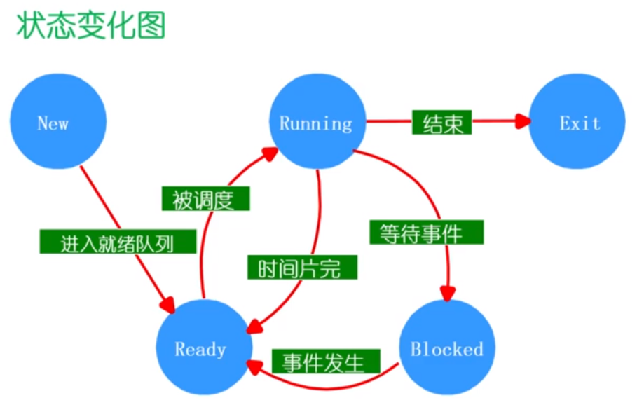
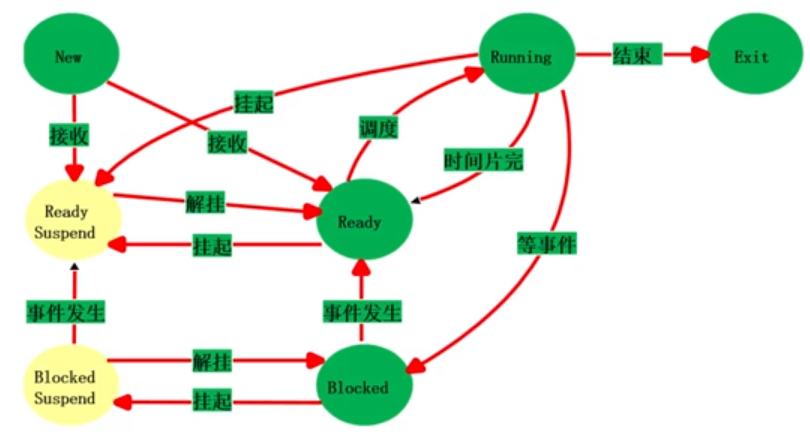
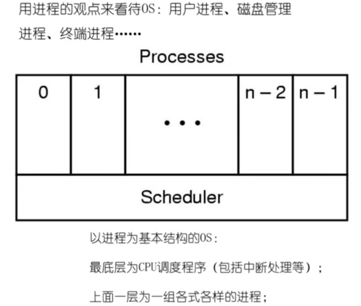
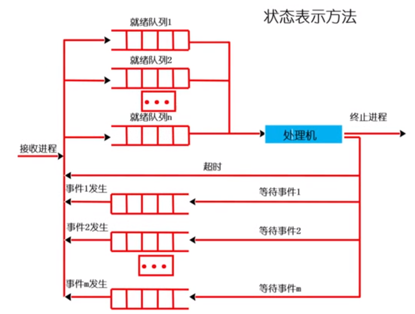
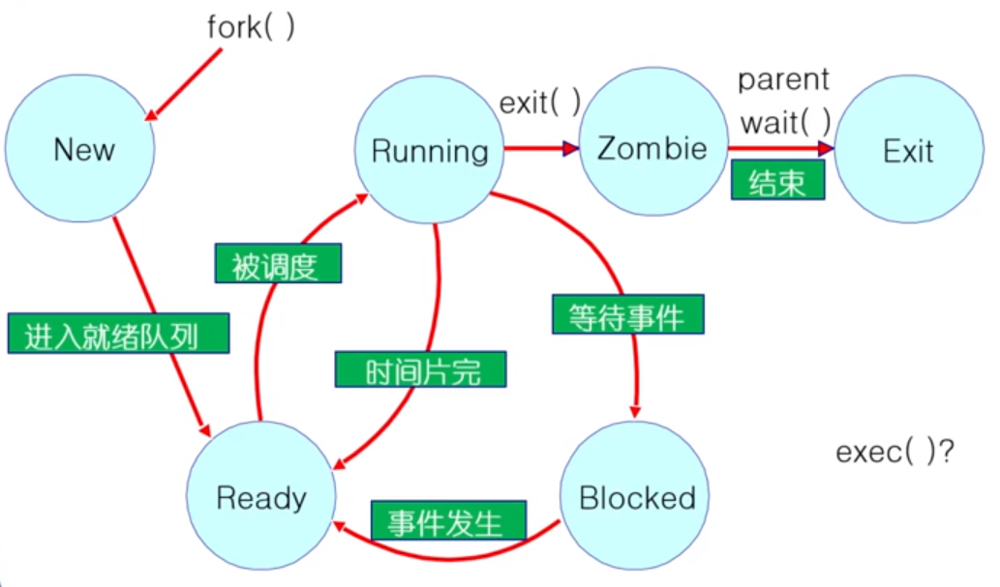

操作系统
一、
二、进程（Process）
2.1、进程的概念
- 计算机中一个具有独立功能的程序关于某数据集合上的一次动态执行过程。
- 操作系统进行资源分配和调度的基本单位，以及操作系统结构的基础。
2.2、进程的组成
- 程序代码；
- 程序处理的数据；
- 程序计数器中的值，指示下一条将运行的指令；
- 一组通用的寄存器的当前值，堆、栈;
- 一组系统资源（如内存资源，打开的文件，网络）；
- 总之，进程包含了正在运行的一个程序的所有状态信息。
2.3、进程与程序的联系
- 进程 ≠ 程序
- 程序是产生进程的基础；
- 程序的每次运行构成不同的进程；
- 进程是程序功能的体现；
- 通过多次执行，一个程序可对应多个进程；通过调用关系，一个进程可包括多个程序。
类比：有一个计算机科学家，想亲手给女儿做一个生日蛋糕。所以他就找了一本有关做蛋糕的食谱，买了一些原料，面粉、鸡蛋、糖、香料等，然后边看边学边做。这时小儿子哭着跑进来，说手被蜜蜂蛰了。教授只好把蛋糕先放在一边。他在食谱上做了个标记，把状态信息记录了起来。然后又去找了一本医疗手册，查到了相关的内容，按照上面的指令一步步地执行。 当伤口处理完之后，又回到厨房继续做蛋糕。
- 食谱 = 程序
- 原料 = 数据
- 科学家 = CPU
- 做蛋糕 = 进程
- CPU从一个进程（做蛋糕）切换（中断进程）到另一个进程（医疗救护 —> 优先级更高）
2.4、进程与程序的区别
| 进程 | 程序 |
|---|---|
| 动态/状态变化的过程 | 静态/永久保存 |
| 进程是程序的执行 | 程序是有序代码的集合 |
| 核心态/用户态 | |
| 暂时性/运行性 | 永久性 |
2.5、进程的特点
动态性：可动态地创建，结束进程。
并发性：进程可以被独立调度并占用处理器运行。
独立性：不同进程的工作不互相影响（操作系统保证，内存管理页表）。
制约性：因访问共享数据/资源或进程间同步而产生制约。
2.6、进程控制块 PCB
程序 = 算法 + 数据结构
-
描述进程的数据结构：进程控制块 （Process Control Block，PCB）
- 操作系统为每个进程都维护了一个 PCB ，用来保存与进程有关的各种状态信息。
-
进程控制块：操作系统管理控制进程运行所用的信息集合。
- 操作系统用 PCB 来描述进程的基本情况以及运行变化的过程。
PCB 是进程存在的唯一标识。
进程的创建：为该进程生成一个 PCB；
进程的终止：回收它的PCB;
进程的组织管理：通过对PCB的组织管理来实现;
PCB 含有以下三大类信息：
-
1、进程标识信息，如本进程标识，本进程的父进程标识，用户标识。
-
2、处理机状态信息保存区，保存进程的运行现场信息。
- 用户可见寄存器
- 控制和状态寄存器
- 栈指针
-
3、进程控制信息
- 调度和状态信息，用于操作系统调度进程并占用处理机使用。
- 进程间通信信息，为支持进程间的与通信相关的各种标识、信号、信件等,
这些信息存在接收方的进程控制块中。 - 存储管理信息，包含有指向本进程映像存储空间的数据结构。
- 进程所用资源，说明由进程打开、使用的系统资源，如打开的文件等。
- 有关数据结构连接信息，进程可以连接到一个进程队列中，或连接到相关
的其他进程的PCB。
2.7、进程的生命周期
2.7.1、进程生命周期管理
进程创建=> 三个主要条件- 系统初始化时；init 进程
- 用户请求创建一个新的进程；
- 正在运行的进程执行了创建进程的系统调用；
进程运行- 内核选择一个就绪的进程，让它占用处理机并执行；
- 如何选择？=> 系统调度
进程等待（阻塞）- 请求并等待系统服务，无法马上完成；
- 启动某种操作，无法马上完成；
- 需要的数据没有到达；
进程唤醒- 进程只能被别的进程唤醒或操作系统唤醒；
- 被阻塞进程需要的资源可以被满足；
- 被阻塞进程等待的事件到达；
- 将该进程的PCB插入到就绪队列；
进程结束- 正常退出
- 错误退出
- 致命错误
- 被其他进程 kill
2.7.2、进程状态变化模型
进程在生命结束前处于且仅处于三种基本状态之一，不同系统设置的进程状态数目不同。
- 创建状态（New）：一个进程正在被创建，还没有初始化完成没有转到就绪状态之前。
- NULL —> New：一个新进程被产生出来执行一个程序。
- New —> Ready：当进程被创建完成并初始化后，一切准备就绪运行时变为就绪状态。
就绪状态（Ready）：一个进程获得除处理机之外的一切所需资源，一旦得到处理机即可运行。运行状态（Running）：一个进程正在处理机上运行时。等待状态（又称阻塞状态 Blocked）：一个进程正在等待某一事件而暂停运行时。如等待某资源，等待输入输出完成。- 结束状态（Exit）：一个进程正在从系统中消失的状态。

2.7.3、进程挂起模式
进程在挂起状态时，意味着进程没有占用内存空间。处于挂起状态的进程映像在磁盘上。
挂起状态
阻塞挂起状态（Block-Suspend）：进程在外存并等待某事件的出现；就绪挂起状态（Ready-Suspend）：进程在外存，但只要进入内存，即可运行；

挂起状态相关的转换
挂起(Suspend) ：把一个进程从内存转到外存；可能有以下几种情况
-
阻塞到阻塞挂起： 没有进程处于就绪状态或就绪进程要求更多内存资源时，
会进行这种转换，以提交新进程或运行就绪进程； -
就绪到就绪挂起： 当有高优先级阻塞(系统认为会很快就绪的)进程和低优先
就绪进程时，系统会选择挂起低优先级就绪进程； -
运行到就绪挂起： 对抢先式分时系统，当有高优先级阻塞挂起进程因事件出
现而进入就绪挂起时，系统可能会把运行进程转到就绪挂起状态；
在外存时的状态转换
- 阻塞挂起到就绪挂起： 当有阻塞挂起进程因相关事件出现时，系统会把阻塞
挂起进程转换为就绪挂起进程。虽然已经转为就绪状态，但资源还在外存。
解挂/激活（Active）
把一个程序从外存转到内存；
- 就绪挂起到就绪： 没有就绪进程或挂起就绪进程优先级高于就绪进程时，会进
行这种转换; - 阻塞挂起到阻塞： 当一个进程释放足够内存时，系统会把一个高优先级阻塞挂
起(系统认为会很快出现所等待的事件)进程转换为阻塞进程;
OS通过 PCB 和进程的状态管理PCB

2.7.4、进程状态队列
- 由操作系统来维护
一组队列，用来表示系统当中所有进程的当前状态； - 不同的状态分别用不同的队列来表示(就绪队列、各种类型的阻塞队列) ；
- 每个进程的PCB都根据它的状态加入到相应的队列当中，当一个进程的状态发生
变化时，它的PCB从一个状态队列中脱离出来，加入到另外一个队列。

2.7.5、进程的上下文切换
由于CPU时间片运行结束，暂停当前运行进程，从运行状态变成其他状态，
并且调度另一个进程，从就绪状态变成运行状态，称为一次上下文切换。
- 切换前，保存进程上下文信息到 PCB
- 寄存器
- CPU状态
- 内存地址空间
- 切换后，从PCB里获取进程信息恢复进程上下文
- 快速切换（汇编实现）
fork(); //创建子进程- 对子进程分配内存
- 复制父进程的内存和CPU寄存器到子进程里
- 开销昂贵
exec(); //加载程序取代当前运行的进程wait(); //父进程等待子进程结束- 使父进程去睡眠来等待子进程的结果。
- 当子进程调用exit()时候，OS解锁父进程，并且将通过exit()传递得到的返回值作为wait调用的一个结果（连同子进程的pid一起）如果这里没有子进程存活， wait()立刻返回。
exit();//进入僵尸状态，等待父进程回收子进程资源

2.8、进程间通信 IPC
Inter-Process Communication
发送路径：直接、间接
消息传递：阻塞、非阻塞
- 信号（Signal）：软件终端通知事件处理；不能传输要交换的任何数据；
- Catch：指定信号处理函数被调用；
- Ignore：依靠操作系统的默认操作；
- Mask：闭塞信号，因此不会传送；
- 管道
- 传输数据；
- 消息队列
- FIFO
- 共享内存
- 每个进程都有私有地址空间；
- 每个地址空间内，明确地设置了共享内存段；
- 直接通讯；
- 快速方便地共享数据；
- 必须同步数据访问；
- Socket
2.9、线程（Thread）
为什么需要线程？
- 进程之间如何通讯，共享数据；
- 进程开销比较大，分配资源，创建PCB；
- 撤销进程时，回收资源，撤销 PCB；
- 进程切换时，保存当前进程的状态信息等；
2.9.1、线程的概念
- 进程当中的一条执行流程。
- 线程 = 进程 - 共享资源
- 进程是操作系统资源分配的基本单位，而线程是 CPU 任务调度和执行的基本单位。
优点：
- 一个进程中可以同时存在多个线程；
- 各个线程之间可以并发地执行；
- 各个线程之间可以共享地址空间和文件等资源。
缺点：
- 一个线程崩溃，会导致其所属进程的所有线程崩溃。
2.9…2、线程的实现
用户线程：在用户空间实现。操作系统看不到的线程。
-
TCB （Thread Control Block）在用户线程里面。
-
缺点：如果一个进程中的某个线程阻塞，除非它自己主动交出CPU使用权，
否则它所在的进程当中的其他线程将无法继续运行。由于时间片分配给的进
程，每个线程得到的时间片更少，执行会较慢。
内核线程：在内核中实现。操作系统管理起来的线程。
-
TCB （Thread Control Block）在内核里面。
-
内核线程是指在操作系统的内核当中实现的一种线程机制，由操作系统的内
核来完成线程的创建，终止和管理。
轻量级进程：在内核中实现，支持用户线程。
- 一个进程可有一个或多个轻量级进程，每个量级进程由一个单独的内核线程来支持。
2.9…3、死锁
资源互斥、请求保持、不可剥夺、循环等待
- 银行家算法 => 开销较大、一般用来做调试；
- 要知道每个线程需要资源多少
- 死锁检测算法
2.9…4、死锁恢复
- 选择一个受害者 — 最小的成本；
- 回滚 — 返回到一些安全状态，重启进程到安全状态；
- 饥饿 — 同一进程可能一直被选作受害者，包括回滚的数量；
三、调度
3.1、调度原则
CPU使用率- CPU处于忙状态所占时间的百分比。
吞吐量=> 增加吞吐量- 在单位时间内完成的进程数量。
周转时间- 一个进程从初始化到结束，包括所有等待时间所花费的时间。
等待时间=> 减少等待时间- 进程在就绪队列中的总时间。
响应时间=> 减少响应时间- 从一个请求被提交到产生第一次响应所花费的总时间。
3.2、调度算法
FCFS（First Come，FirstServer）先来先服务 不公平SPN(SJF)短进程优先(短作业优先) 非抢占 不公平SRT短剩余时间优先 可抢占 不公平- Shortest Process Next（Shortest Job First）Shortest Remaining Time
HRRN（Highest Response Ratio Next）最高响应比优先- SPN 基础改进
- 不可抢占
- 关注进程等待时间
- 防止无限期推迟
Round Robin轮循 公平- 时间量子太大 => 等待时间长，极端情况退化成 FCFS；
- 时间量子过小 => 吞吐量由于大量的上下文切换开销收到影响；
- 合理的时间量子 => 维持上下文切换开销处于 1% 以内 ；
Multilevel Feedback Queues（多级反馈队列）- 时间量子大小随优先级级别增加而增加，动态调整进程优先级；
- 如果任务在当前的时间量子中没有完成，则降到下一个优先级；
- 高优先级进程时间量子短，低优先级进程时间量子长；
- 等待时间越长，优先级升高。反之执行时间越长，优先级降低；
- I/O 密集型任务停留在高优先级，CPU密集型任务的优先级下降很快；
Fair Share Scheduing（公平共享调度）
3.3、实时调度
强实时系统
- 需要在保证的时间内完成重要的任务，必须完成
弱实时系统
- 要求重要的进程的优先级更高，尽量完成，并非必须
RM (Rate Monotonic) 速率单调调度
- 最佳静态优先级调度
- 通过周期安排优先级
- 周期越短优先级越高
- 执行周期最短的任务
EDF (Earliest Deadline First) 最早期限调度
- 最佳的动态优先级调度
- Deadl ine越早优先级越高
- 执行Deadl ine最早的任务
四、中断 竞态条件
Critical section (临界区)：临界区是指进程中的一段需要访问共享资源并且当另一个进程处于相应代码区域时便不会被执行的代码区域。同一时间临界区中最大存在一个线程。
Mutual exclusion (互斥)：当一个进程处于临界区并访问共享资源时，没有其他进程会处于临界区并且访问任何相同的共享资源。
Dead lock (死锁)：两个或以上的进程，在相互等待完成特定任务，最终没法将自身任务进行下去。
Starvation (饥饿)：一个可执行进程，被调度器持续忽略以至于虽然处于可执行状态却不被执行。
4.1、禁用硬件中断
- 没有中断，就没有上下文切换，因此就没有并发
- 进入临界区 => 禁止中断
- 离开临界区 => 开启中断
- 缺点：
- 整个系统可能会为该进程停止；
- 导致其他线程处于饥饿状态；
- 无法限制响应中断所需的时间；
- 无法解决互斥问题；
4.2、基于软件的解决方案
- 编写代码
4.3、锁的抽象
- 硬件提供了一些原语；
- OS 提供更高级的编程抽象 —> 锁、信号量；
- 锁是抽象的数据结构，一个二进制状态；
- 提供互斥访问
五、信号量、管程
5.1、信号量的使用
抽象数据类型：一个整形（semaphore）， 两个原子操作
-
P()：sem减1，如果 sem< 0, 等待，否则继续；
-
V()：sem加1，如果 sem<=0 ，唤醒一个等待的P；
-
信号量是整数；
-
信号量是被保护的变量;
- 初始化完成后，唯一改变一个信号量的值的办法是通过P()和V();
- 操作必须是原子；
-
P()能够阻塞，V()不会阻塞；
-
两种类型信号量：
- 二进制信号量：可以是 0 或 1；
- 一般/计数信号量：可取任何非负值；
- 两者相互表现（给定一个可以实现另一个）
-
信号量可以用在2个方面
- 互斥
- 条件同步（调度约束一个线程等待另一个线程的事情发生）
5.2、管程
目的：分离互斥和条件同步的关注。
什么是管程：
-
包含了一系列共享变量，以及针对这些变量操作函数的组合；
-
一个锁：指定临界区，互斥性；一个管程只能有一个线程进入；
-
0或者多个条件变量：等待/通知信号量用于管理并发访问共享数据；
感谢阅读
 支付宝打赏
支付宝打赏
 微信打赏
微信打赏
赞赏一下